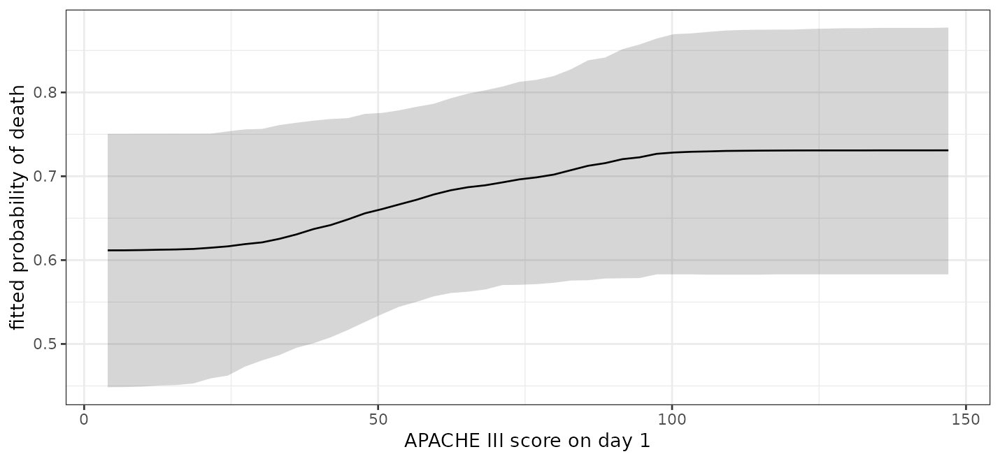
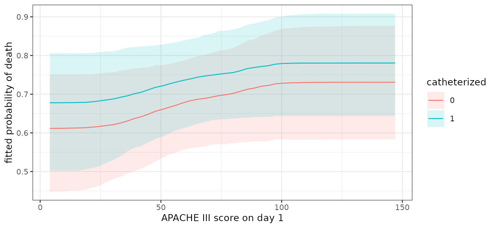

Introduction
A forest has no coefficients. There is no table of slopes to read,
and no standard error to put beside one. This is the part of the
workflow that changes most when moving from glm() to BART,
and it is the part where the change is an improvement rather than a
cost.
The replacement is to ask the fitted model questions about predictions. What does it predict for these people? What would it predict if this variable were different? How much does the answer differ between groups? The marginaleffects package (Arel-Bundock et al. 2024) asks all of them, and returns posterior intervals with the answers.
This vignette covers the questions worth asking and how to phrase
them. vignette("bartisan") is the shorter tour, and this
expands its section on interpreting the fit.
Three questions
Everything below is one of three things.
A prediction is what the model expects for a set of
covariate values. predictions() gives one per row,
avg_predictions() averages them.
A comparison is the difference between two predictions that differ in one variable. This is the closest thing to a regression coefficient and it is what you usually want.
A slope is the derivative of the prediction with respect to a numeric variable. It is the least useful of the three here, for a reason given below.
Average effects
avg_comparisons() with no variables
argument gives every predictor at once, which for this model is a long
table. A few at a time is easier to read:
avg_comparisons(fit, variables = c("rhc", "age", "card"))
#>
#> Term Contrast Estimate 2.5 % 97.5 %
#> age +1 0.00316 0.00149 0.00472
#> card yes - no 0.02453 -0.00494 0.08379
#> rhc 1 - 0 0.05776 0.00000 0.10727
#>
#> Type: responseRead this as a coefficient table. Each estimate is an average
difference in predicted probability, holding everything else at each
patient’s own values: for a factor, between the levels named in the
Contrast column, and for a numeric predictor, for an
increase of one unit. rhc is coded 0 and 1, so its one-unit
contrast is the treatment effect.
The splitting prior, if a contrast is the point
An estimate here can come back as exactly zero, and an interval bound with it. That is not a rounding artifact. The default splitting prior is a variable-selection prior, so in a draw where it uses the predictor in no tree the prediction does not depend on it and the contrast is exactly zero; the posterior of the contrast is a mixture with a point mass there, holding whatever share of draws dropped the predictor.
It matters more than it sounds. On a simulated effect of 0.2 against residual noise of 1, the prior halved the estimate and its 95% interval covered the truth 60% of the time. A strong effect is untouched, because the prior never has reason to drop a predictor that is earning its splits, so this is a weak-signal problem rather than a general one.
If a contrast is what you are reporting, fit with
sparsity = FALSE, or with split_prior, which
fixes the weights and so cannot drop anything.
?bartisan_control has the measurements for both.
Choosing the step for a numeric predictor
One unit is the default and is often the wrong scale. One point of an illness score is a small change; ten points is a difference someone would notice.
avg_comparisons(fit, variables = list(aps = 10))
#>
#> Estimate 2.5 % 97.5 %
#> 0.013 0 0.0295
#>
#> Term: aps
#> Type: response
#> Comparison: +10Always say which step you used when reporting a numeric effect. Unlike a linear model, the answer here is not ten times the one-unit effect, because the relationship is not assumed to be a straight line.
Effects for subgroups
by splits the average by a grouping variable.
avg_comparisons(fit, variables = "rhc", by = "card")
#>
#> card Estimate 2.5 % 97.5 %
#> no 0.0582 0 0.109
#> yes 0.0571 0 0.108
#>
#> Term: rhc
#> Type: response
#> Comparison: 1 - 0The two subgroup estimates are close, and both intervals reach zero.
A common mistake is to stop here and conclude that the effect differs between groups. That comparison is not a test. The question is whether the two effects differ from each other, which needs the difference of the two, with its own interval.
avg_comparisons(fit, variables = "rhc", by = "card",
hypothesis = ~pairwise)
#>
#> Hypothesis Estimate 2.5 % 97.5 %
#> (yes) - (no) -0.000542 -0.0197 0.0135
#>
#> Type: responseThe difference is small with an interval covering zero. There is no evidence here that the effect of catheterization depends on cardiovascular disease. This is how to test an interaction in a model that never had an interaction term to test.
avg_predictions() does the same thing for predictions
rather than differences, which is useful for describing groups:
avg_predictions(fit, by = "card")
#>
#> card Estimate 2.5 % 97.5 %
#> no 0.635 0.607 0.660
#> yes 0.690 0.656 0.731
#>
#> Type: responseThe shape of a relationship
Averages hide shape. To see the fitted function, plot predictions against one predictor with everything else held fixed. Asking for the numbers rather than the plot gives more control over how it is drawn:
library(ggplot2)
curve <- plot_predictions(fit, condition = "aps", draw = FALSE)
ggplot(curve, aes(aps, estimate)) +
geom_ribbon(aes(ymin = conf.low, ymax = conf.high), alpha = 0.2) +
geom_line() +
labs(x = "APACHE III score on day 1", y = "fitted probability of death") +
theme_bw(base_size = 9)
The probability of death rises with the illness score, and the rise is not a straight line on any scale the model was told about. Nothing was specified to find the shape.
The band is a credible interval and is wide at the top, where few patients were that sick. Treat the ends with more caution than the middle.
Adding a second variable shows how the shape differs across groups.
curve2 <- plot_predictions(fit, condition = c("aps", "rhc"), draw = FALSE)
ggplot(curve2, aes(aps, estimate, colour = factor(rhc))) +
geom_ribbon(aes(ymin = conf.low, ymax = conf.high, fill = factor(rhc)),
alpha = 0.15, colour = NA) +
geom_line() +
labs(x = "APACHE III score on day 1", y = "fitted probability of death",
colour = "catheterized", fill = "catheterized") +
theme_bw(base_size = 9)
The two curves run close together. If they diverged, that would be a moderation worth reporting, and the difference of differences above is how to put a number on it.
Scales
type chooses the scale on which predictions are made and
therefore the scale on which effects are reported.
avg_comparisons(fit, variables = "rhc", type = "link")
#>
#> Estimate 2.5 % 97.5 %
#> 0.308 0 0.583
#>
#> Term: rhc
#> Type: link
#> Comparison: 1 - 0On the link scale this is a difference in log-odds, which is what a logistic regression coefficient is. It is the less useful of the two here. A difference in probability is interpretable without reference to the model, and it is the number a reader can act on; a difference in log-odds needs a baseline before it means anything.
For survival families, type = "survival" with a
times argument gives a difference in survival probability
at a horizon. See vignette("survival").
Why slopes are unreliable here
avg_slopes() reports a derivative. It is available and
it will return a number, but that number should not be trusted for a fit
made with the default settings.
The reason is the predictor transform. By default numeric predictors are mapped through their empirical distribution function before the trees see them, which makes the fitted function a step function of the original predictor. Between two observed values the prediction does not change at all, so the difference quotient is either exactly zero or a whole step divided by a very small number, depending on where the step lands.
Use comparisons() with a step you can interpret, as with
aps = 10 above. If a genuine derivative is needed, refit
with x_transform = "range" in
bartisan_control(), which is linear and does have one. This
is documented at ?bartisan-marginaleffects.
When the coefficient is the thing you want
Everything above reads an effect out of a fitted surface by asking the model what it predicts under two versions of the data. There is another way to write the model, in which the effect is a parameter rather than a contrast:
\[f_0(x) + z\,f_1(x)\]
Here \(f_1\) is a forest of its own,
and it is the effect of z: how much the prediction
moves per unit of z, as a function of the other predictors.
vc() asks for it. This is the varying-coefficient model of
Deshpande et al. (2026), of which Hahn et al. (2020)
is the case of one binary covariate and Woody et
al. (2020) the case of one
continuous one.
fit_vc <- bartisan(death ~ age + sex + race + edu + aps + meanbp + resp +
hema + pafi + paco2 + crea + surv2m + card + vc(rhc),
data = rhc, family = binomial(), chains = 4,
sparsity = FALSE)
head(coef(fit_vc))
#> rhc
#> [1,] 0.04875
#> [2,] 0.02698
#> [3,] 0.01752
#> [4,] 0.03200
#> [5,] 0.02834
#> [6,] 0.02557coef() returns one value per patient, which is what a
coefficient becomes when it is allowed to vary. It is on the link scale,
so for this binary outcome it is a difference in log odds rather than in
probability; avg_comparisons() is still what reports an
effect on the scale a reader can act on.
What the reparameterization buys is a prior on the effect itself. The
forest for \(f_1\) is regularized
separately from the forest for the rest of the outcome, so shrinking the
prognostic part does not shrink the effect.
vignette("causal") covers why that matters and
bcf() sets it up for the causal case.
Two things worth knowing before reaching for it.
The effect is linear in the covariate unless you say otherwise. For a binary treatment that is no assumption at all, since there are only two values. For a continuous predictor it says the effect is proportional to it, which is a real restriction. Letting the coefficient’s forest split on the covariate itself removes it, and then the effect varies across the covariate’s own range:
# The effect of `aps` may itself change across `aps`.
y ~ age + vc(aps, ~ aps + age)And a covariate whose coefficient varies should not also be a
predictor of the control function. With it in both, the two are not
separately identified: any function of it can move between them. Writing
the covariate only inside vc() is what keeps them apart,
and bartisan() warns if the formula does otherwise.
For a family with several additive predictors, each parameter’s
formula carries its own vc() terms, so a covariate can have
a coefficient on more than one of them:
# The effect of `z` on the mean, and separately on the spread.
bartisan(list(mean = y ~ x1 + x2 + vc(z), log_sd = ~ x1 + x2 + vc(z)),
data = d, family = location_scale())coef() then returns one column per coefficient, named
mean:z and log_sd:z for the forests they come
from, which is also how per-forest settings like num_trees
are keyed. ?vc covers the rest, including the one family
that refuses this. With it in both, the two are not separately
identified: any function of it can move between them. Writing the
covariate only inside vc() is what keeps them apart, and
bartisan() warns if the formula does otherwise.
What these are not
Everything here is a description of the fitted model.
avg_comparisons() reports what the model predicts would
differ between two versions of the data, which is a causal quantity only
if the model contains enough covariates to account for confounding.
Patients were not randomized to catheterization, so for this fit that is
a strong assumption. vignette("causal") covers what is
needed.
The intervals are posterior credible intervals under the model. They cover the uncertainty in the fitted function, and they do not cover the possibility that the model is missing a confounder, that the outcome is measured with bias, or that the sample is not the population of interest.
Where to go next
vignette("importance") covers which predictors the
forest uses, which is a different question from how much they move the
outcome. vignette("diagnostics") covers whether the fit can
be trusted before any of this is read.
?bartisan-marginaleffects documents which
marginaleffects functions are supported and the arguments that
are specific to this package.